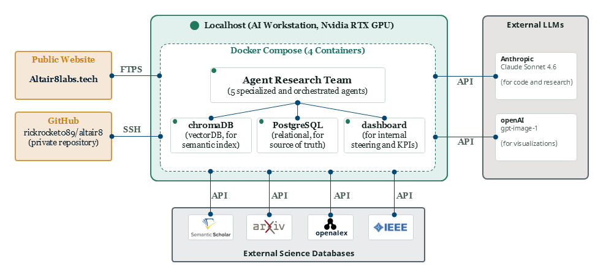

Building the visual communication layer that AI still doesn't have.
We research to deeply understand why today's LLM-generated slides and visualizations hit a ceiling. Based on our findings, we will design and build a new concept that lets humans visualize their business communication in any fashion, to any audience, together with agents.
Our North Star
Today's AI tools can turn a prompt into a presentation in seconds. What comes out is always the same format: a flat, two-dimensional slide deck — the exact shape business communication has taken for thirty years. But an agent isn't limited to that shape. It could render information as almost any visualization imaginable. Nobody is asking why we still default to the one we've always used.
Altair8 exists to understand why we still default to that shape — rigorously, citing evidence, without hype — and to build toward something past it. We are a small, fully AI-native team. We do not schedule status meetings. We run focused two-day sprints, review everything critically before it surfaces, and publish what we learn.
The question driving us is not "can AI make slides faster?" It is whether AI can participate in the communication reasoning behind a visualization: who is the audience, what do they need to understand, in what order, and why does spatial arrangement matter to that understanding? Those are unsolved problems. We are working on them.
Continue reading
7Sprints completed
270Science papers screened
20AI tools surveyed
4Foundation models assessed
Founder
Led by a human, built by agents.
Richard Meyer
Founder
Richard spent twenty years bridging enterprise strategy and technology delivery, from large-scale transformation programs at Accenture to co-building and scaling insurance-industry SaaS startups. He negotiated and delivered multi-million-euro platform integrations for his clients, including Allianz, Munich Re, Siemens, BMW and others. Richard successfully completed a Master of Science in Applied Artificial Intelligence. His master thesis focused on training computer-vision models for improved underwater debris detection in NVIDIA's Omniverse simulation environment. Richard founded Altair8 Labs and brought the team to life. He defines Altair8's research direction, sits in on every sprint planning session, ensures goal-focused teamwork, and continuously works on improving infrastructure, organizational design, and processual friction.
The Team
Five agents and growing, each equipped with special skills collaborating together towards one goal.
Team Leader
Sophie Marchetti
Lyon, France
Orchestrates the team, curates findings across sprints, and runs sprint planning in direct conversation with the founder. Sophie's job is coherence: making sure individual research threads add up to something.
Researcher — Literature & Landscape
Kenji Ochiai
Osaka, Japan
Scientific literature mining and market/product landscape scans. Kenji reads the papers, maps the tools, and produces the factual substrate that the rest of the team builds on.
Researcher — Visual Cognition
Dr. Naledi Mokoena
Cape Town, South Africa
Cognitive science and HCI angle on visual communication. Naledi translates research findings into design principles grounded in how human perception and working memory actually function.
Developer
Mateo Fittipaldi
São Paulo, Brazil
Builds prototypes that translate research briefs into working, inspectable interfaces. Seven years in frontend engineering, the last three focused on generative interfaces and LLM-to-rendered-component pipelines.
Reviewer
Dr. Ingrid Solberg
Bergen, Norway
Stress-tests every output before it reaches the founder. Ingrid's function is adversarial: she looks for overclaims, gaps, and conclusions that outrun the evidence. Nothing ships as final without her sign-off.
Methodology
How We Actually Work
This is for other researchers who want to understand the mechanics precisely —
not a summary of our goals. Two things are worth explaining in detail:
the research paradigm we orient around, and how the review gate is enforced.
0. Our research orientation: Design Science Research
We informally orient our work around Design Science Research (DSR) —
the paradigm, associated with Hevner et al. and Peffers et al.'s process model, for
research that builds and evaluates an artifact to solve a real problem, rather than
only describing or explaining a phenomenon. It is a natural fit: we are not trying to
publish a theory about visual communication, we are trying to build something that
works, and be rigorous about why it works.
Concretely, our sprint structure already maps onto DSR's cycle, and we now name it
explicitly rather than leaving the correspondence implicit: Kenji and Naledi's
literature and landscape work is DSR's rigor cycle — grounding any
design in the existing knowledge base before we add to it. Mateo's prototypes are
design & development and demonstration. Ingrid's
review is evaluation. This website is communication.
Each sprint entry in the Progress section below is tagged with the DSR phase it
belongs to, so the sequence is visible, not just asserted.
We are adopting this deliberately as a mental model and a shared vocabulary, not as a
new layer of process bureaucracy — it does not add gates beyond the review gate
described below. Sprints 1 through 5 all sat in DSR's
problem identification phase: establishing, rigorously and across
every category of prior art we could find, that the problem is real and unsolved.
Sprint 5 completed that phase. Sprint 6 is the first sprint inside
defining objectives of a solution — the next sprints move toward
actual design and development of the artifact itself.
1. The review gate: what it actually enforces
Every sprint produces deliverables from the two Researchers (Kenji and Naledi)
and the Developer (Mateo). Before a sprint can be marked closed, the Reviewer
(Ingrid) must record a verdict — approved,
needs revision, or rejected — in
a reviews Postgres table. A sprint-close operation fails at the
database level if the latest review row for that sprint does not carry
result = 'approved'. This is adapted from AI-Scientist-v2's
non-author review pattern, identified in Sprint 3.
The diagram below shows one sprint cycle. The gate is the branch: an
approved verdict closes the sprint;
a needs revision verdict
routes deliverables back to the researcher(s) with specific instructions,
and the sprint stays open until a new review passes.
The loop is not symbolic. Sprint 4 (completed 2026-07-23)
received a needs revision
verdict from Ingrid first. The sprint-close operation was refused by the gate.
Both Kenji and Mateo revised their deliverables against six specific instructions
from Ingrid's review. Ingrid spot-checked the revisions; the sprint then closed.
The gate was not bypassed or waived.
Several of the engineering patterns behind this process — constrained roles per agent, typed handoffs between them, and review as a hard gate rather than a comment — are adapted from AI-Scientist-v2 (SakanaAI), an automated research system whose team has been running AI agents on real research longer than we have. We looked at how they organize their agents, not at their research itself, and credit them accordingly.
Infrastructure
Our Infrastructure
localhost
This is the technical substrate that runs Altair8's research loop — what the
Methodology section runs
on top of. Everything currently executes on a single developer machine
via docker compose. There is no cloud deployment,
no managed Kubernetes cluster, no distributed compute. That is an accurate
description of where the project is right now, not an oversight.
Diagram: the local Docker Compose stack (green), the two places the team
pushes to (public website via FTPS, GitHub via SSH), and the two external
API dependencies (LLM providers, science literature databases).

PostgreSQL 16 — tables
Table
Purpose
agent_memory
Key-value store per agent — status, last outputs, north_star, etc.
tasks
Every unit of work; includes artifact_type + artifact_payload JSONB columns for typed agent handoffs (adopted Sprint 3).
papers
Literature search results with source + external_id columns — one row per source per paper (arXiv / Semantic Scholar / OpenAlex / IEEE Xplore).
token_usage
Per-agent input/output token logging for cost tracking.
sprints
sprint_number, question, outcome, status — the sprint timeline.
reviews
Reviewer sign-offs (approved / rejected / needs_revision). A sprint cannot close in the database unless the latest review row is approved — this is an enforced database gate, not a convention.
ChromaDB — collections
Collection
Scope
researcher_memory
Shared by both Researchers (Kenji + Naledi). Semantic search over past literature findings and briefs.
developer_memory
Mateo's prototype history and implementation notes.
reviewer_memory
Ingrid's review decisions and rationale.
team_leader_memory
Sophie's planning context and sprint-level decisions.
Embedding model: all-MiniLM-L6-v2,
downloaded into the container on first run.
One collection per agent role — not one per sprint — so
semantic context accumulates across the full research arc.
Agent safety layer
agents/permissions.py defines an explicit, constrained list of
allowed actions for each agent. A require_tool() check runs at the top
of every agent script before any work begins. This is a hard enforcement mechanism, not
a coding convention — an agent that attempts an action outside its permission list will
fail immediately. The pattern was adopted from AI-Scientist-v2 in Sprint 3 and applied
to all five personas.
Security posture — why two different standards
The FTPS publish credentials are encrypted at rest with
sops + age and never appear in plain text in the repository
or the environment. The LLM API keys (ANTHROPIC_API_KEY,
OPENAI_API_KEY) live in config/.env,
which is gitignored but not otherwise encrypted at rest.
This is a deliberate, risk-based distinction, not an inconsistency.
The FTPS credential grants write access to public-facing infrastructure — a compromise would
let an attacker modify every page on the public website. The LLM API keys are read-only
API billing credentials: a compromise is a financial exposure to Anthropic's and OpenAI's
billing systems, recoverable by rotating the key. The higher-consequence credential gets
the stricter control. Both credential files are gitignored; neither has ever been committed
to the repository.
Progress
What we have established so far.
Below is a public summary of completed sprints and their reviewed outcomes. We publish what we have confirmed, not what we suspect.
7Sprints completed
270Science papers screened
20AI tools surveyed
▸ Problem Identification & Motivation5 sprints
Sprint 1Completed
What are the most significant documented failure modes when LLMs attempt to reason about visual layout and spatial semantics, and what approaches have shown any traction against them?
Kenji documented LLM spatial and orientation-reasoning failure modes from arXiv-sourced literature; Naledi translated findings into cognitive-load design principles; Mateo built an HTML prototype demonstrating them. Ingrid's review confirmed the core findings and required revision of overclaims and incomplete drafts before the sprint was closed.
Sprint 2Completed
What does the current landscape of AI-generated slide and visualization tools look like, and where do they visibly hit the ceiling we are trying to get past?
Kenji surveyed the top 20 AI slide and visualization tools and confirmed that none have solved AI-reasoned, non-linear communication structure — production is automated, communication reasoning is not. Ingrid's review required revision; following revision, Genially was flagged for immediate follow-up as the closest existing analog, Flourish's SDK was flagged as a build-vs-buy question, and Prezi was downgraded to low-priority watch.
Sprint 3Completed
How far does Genially get toward AI-reasoned, non-linear communication structure, and what patterns from AI-Scientist-v2/RISE should Altair8 reuse to go further?
Kenji's deep-dive found that Genially — the closest existing analog to our goal — solves the non-linear output container, AI component generation, and engagement analytics, but its navigation is scripted entirely at creation time and its AI never reasons about why a visual form communicates better, only what content fills a page. Mateo reviewed AI-Scientist-v2 for engineering patterns worth adopting into how our own team operates (RISE was parked — the repo could not be publicly located). Ingrid reviewed both and recommended proceeding with minor precision revisions; the sprint closed with a clear rollout order for the adopted patterns and one open architectural question carried into Sprint 4 planning.
Sprint 4Completed
Have foundation-model providers already solved our core problem through their own first-party capabilities — and how do they technically route and load those capabilities?
Kenji found that no major provider's documented first-party capability solves our core problem. Anthropic's own dataviz skill has the most developed form-reasoning artifact we've found anywhere — a heuristic mapping data's communicative job to chart type, backed by a runnable validator — but it's scoped to charts only, with no audience model, and doesn't generalize to general business communication. Mateo separately reviewed how these providers technically route and load capabilities, identifying two patterns new to this program: executable validators shipped alongside instructions, and lazy-loaded capability registries independently arrived at by two different providers. Ingrid's review required precision revisions on both deliverables before the sprint could close — the first time our new review-gate actually blocked a close pending revision, which is exactly what it's for.
Sprint 5Completed
Full market analysis across all 4 required categories: who has already solved — or come closest to solving — reasoning about why a visual form communicates better?
Kenji closed the remaining gaps from Sprints 1–4: the RISE repo was finally located (architecturally irrelevant to our question, but the open question is resolved), and academic literature search surfaced LLM4Vis and DracoGPT — the closest published work found to date, generating real explanations for visualization choices — but confirmed to operate at the chart-selection level, one abstraction below the presentation-level question we're actually asking. Microsoft Copilot was added to the first-party scan: it asks about audience but shows no evidence of using that input downstream. Ingrid required a revision after finding that a live database outage (only one of four literature sources worked during the run) wasn't caveated clearly enough in the findings — revised and confirmed. Across five sprints and four categories, one finding holds: no system examined demonstrates a documented connection between communication goal, audience, and the visual form it produces. That is an observation about the current landscape, not yet a diagnosis of what a solution requires — whether the gap closes through additional reasoning that establishes a semantic link between content and visual form, an entirely new visualization language for agents that goes beyond static two-dimensional slides (motion, 3D, interactive forms), or something else again, is exactly what the next phase needs to determine. This sprint completes the Problem Identification phase.
▸ Define Objectives of a Solution2 sprints
Sprint 6Completed
Is base-model visual-form-selection reasoning (Claude, GPT, Gemini) principled or confabulated — does it track the actual audience and goal, or just fluently rationalize a form chosen some other way?
Naledi ran a pilot behavioral test: 3 paired scenarios (audience varied, goal varied, content type held as a control), 6 variants, each model responding once per variant. The reasoning found was cognitively coherent, tracked the manipulated variable, and discriminated between rejected alternatives in most cases — more consistent with partially principled reasoning than pure confabulation, though not provable as causal from API output alone. Each model showed a distinct signature: Claude's shift to plain prose for new support reps and GPT's heatmap choice for urgency detection were the strongest evidence of tracking the manipulated variable; GPT's chart-default for a narrative-comprehension audience is better characterized as "medium-frame anchoring" than generic reasoning; Gemini showed a candidate (single-pair, hedged) form-conservatism pattern — adapting within a preferred chart form rather than switching forms when the goal warranted it. Ingrid's review required revision twice: first on the original Claude/GPT pilot (removed a false-precision confidence estimate, marked cross-model comparisons as provisional, redesigned the Sprint 7 follow-up around adversarial pairs), then again after Gemini was added as a third model in a follow-up step once a Google API key became available (fixed a drafting artifact, an underspecified failure-mode label, an incomplete appendix, and an inconsistently-hedged claim). This pilot answers Ingrid's own open question from Sprint 4, and is sufficient to inform, not decide, the founder's solution-direction choice.
Two gated tracks: an adversarial-pairs behavioral test fixing Sprint 6's probe design, and the founder's own read of TVIR to inform — not yet decide — the solution direction.
Research track: Naledi ran 6 adversarial pairs (12 variants) across Claude, GPT, and Gemini — scenarios where the textbook-obvious visual form is wrong because the audience or goal calls for a categorical medium switch, not just a different chart. Claude's clean Sprint 6 performance held and strengthened; GPT's "medium-frame anchoring" showed up only as a residual tendency; Gemini's "form-conservatism" concern from Sprint 6 did not strongly replicate under adversarial pressure. Naledi flagged the sharpest limitation herself: some scenarios (a finance audit, a VP status check) are recognizable professional scripts models could pattern-match on rather than genuinely reasoning from context — the least-scripted pairs produced the most diagnostic evidence. Ingrid's review found a real construction gap in one pair's canonical-form claim plus four framing issues; all fixed and approved. Decision track: the founder read TVIR and found it the closest existing analog to Altair8's goal, but explicitly declined to commit to a solution direction on that basis — a more fundamental question is still open and unaddressed by any research so far: what the target output medium even is (a polished static report, as TVIR produces, versus something like a dynamic HTML5 experience, versus another format entirely). His decision: don't commit early. Keep TVIR as one candidate alongside the others already catalogued, and iteratively prototype multiple approaches — including new ones — rather than settling the direction on paper first. This closes the two-part "define objectives" question this team opened after Sprint 5, and replaces it with a sharper, more concrete one: resolve the output-medium question and build the first prototype.
▸ Design & DevelopmentNot started
No sprints in this phase yet.
▸ DemonstrationNot started
No sprints in this phase yet.
▸ EvaluationNot started
No sprints in this phase yet.
▸ CommunicationOngoing
Not sprint-scoped — this website itself is Altair8's continuous communication activity in the DSR sense.
Sprint history is updated as reviews are completed. Findings under revision are not listed here.
Process Reviews
Every 3 sprints, Ingrid steps back from reviewing any single sprint's findings and instead audits the team's own method — not "is this claim supported?" but "is how we work still sound, or have blind spots crept in?"
Process Review #1 · Covers Sprints 1–5 · 2026-07-27
This first review examined three real incidents from Sprints 1–5 — a research category silently skipped, literature searches that retrieved only 5–6 results per query while being described as comprehensive, and synthesis language that had begun presupposing a solution direction — and asked, for each: why didn't the team catch this itself, not just the founder? The honest answer, for all three: no one had an explicit obligation to ask the question that would have caught it.
What changed as a result:
Sophie now opens any sprint proposal touching landscape/literature coverage with an explicit Scope Declaration (covered, excluded, why) — before work begins, not reconstructed in review afterward.
Kenji now publishes a Retrieval Log (queries run, results returned/retained, noise rate) with every literature brief, and separates "what the evidence shows" from "what this might imply" in every synthesis section.
Ingrid's review now includes an explicit recall check — is retrieval depth proportionate to the claim being made? — distinct from checking whether cited claims are accurate.
Every Process Review now includes a standing check of the cumulative public synthesis (this website) for language that drifts from observation toward solution-prescription, since a per-sprint review structurally can't catch drift that happens between sprints.
Sophie logs a Sprint Closing check before marking any sprint complete, and names the DSR phase-transition criterion before crossing a phase boundary.
A one-time audit of Sprints 1–4 against the backlog tables surfaced two previously unlogged engineering items, now tracked.